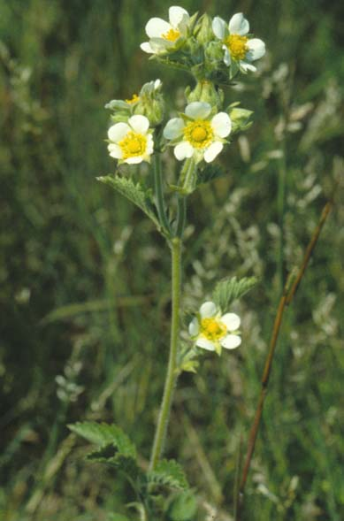

Drymocallis arguta
Family: Rosaceae
Prairie Cinquefoil
Swink/Wilhelm #10
FLOWERING: June - August
SEED TIMING: Late September - mid-October
HABITAT: Dry and mesic prairies
DIAGNOSTIC FEATURES: 1 - 3 feet high. Husky upright perennial with hairy compound leaves and clusters of white or creamy flowers. Clammy brownish hairs and creamy flowers separate this from most other cinquefoils which are yellow.
TO PICK: When most seed heads are brown the entire head can be taken. Seed heads will ripen in a bag.